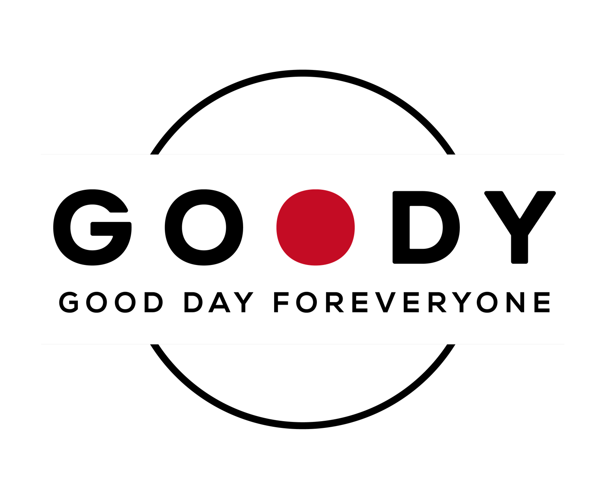

Good Day Foreveryone未経験でも、つくる側へCreative · Talent · BPO · SpiritsEst. 2024 · TokyoGood Day Foreveryone未経験でも、つくる側へCreative · Talent · BPO · SpiritsEst. 2024 · Tokyo
Goody Inc.Tokyo · Worldwide
06 Business Lines1 Mission
未経験でも、つくる側へ。
Press● to enter

Press to enter
未 経 験 で も 、つ く る 側 へ 。
Enter via ●06 Business LinesCreative × Talent × BPO × F&B × SpiritsGoody Inc.Enter via ●06 Business LinesCreative × Talent × BPO × F&B × SpiritsGoody Inc.